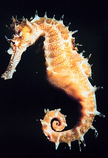
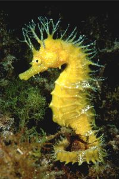
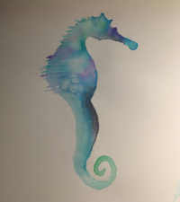

SEAHORSES
genus Hippocampus
Seahorse Facts 

- Seahorses can be as small as 2 centimeters and as large as 35 centimeters
- They live mostly in salt water, often near coral reefs
- They also may live in seagrass beds, estuaries, and mangroves
- There are 47 different species of seahorses
- Seahorses are omnivores
- Many species of seahorses are endangered
Seahorses are small aquatic animals that live in shallow salty waters in tropical and temperate areas.
You can find them in sheltered areas such as seagrass beds, estuaries, coral reefs, and mangroves.

A Seahorse's Life Cycle
Species
Sources